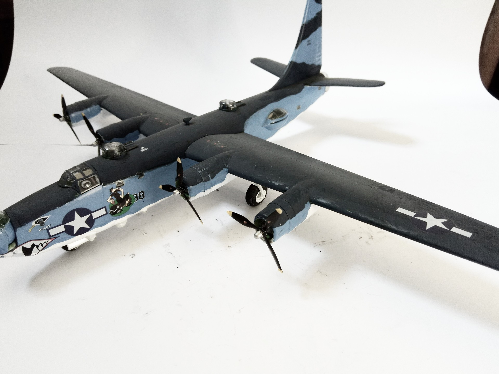

Aerei · scale model archive
Consolidated PB4Y-2 Privateer
Consolidated PB4Y-2 Privateer — Kit: Revell, Scale: 1/72. VPB-106 59398/X398 Tortilla Flat West Field, Tinian, Palawan PH #1/72 #Revell

Photo gallery
English description
VPB-106 59398/X398 Tortilla Flat West Field, Tinian, Palawan PH
#1/72 #Revell
Descrizione italiana
VPB-106 59398/X398 Tortilla Flat West Field, Tinian, Palawan PH.